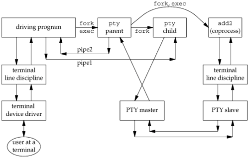

19.6. Using the pty ProgramWe'll now look at various examples with the pty program, seeing the need for the command-line options. If our shell is the Korn shell, we can execute pty ksh and get a brand new invocation of the shell, running under a pseudo terminal. If the file ttyname is the program we showed in Figure 18.16, we can run the pty program as follows: $ who sar :0 Oct 5 18:07 sar pts/0 Oct 5 18:07 sar pts/1 Oct 5 18:07 sar pts/2 Oct 5 18:07 sar pts/3 Oct 5 18:07 sar pts/4 Oct 5 18:07 pts/4 is the highest PTY currently in use $ pty ttyname run program in Figure 18.16 from PTY fd 0: /dev/pts/5 pts/5 is the next available PTY fd 1: /dev/pts/5 fd 2: /dev/pts/5 utmp FileIn Section 6.8, we described the utmp file that records all users currently logged in to a UNIX system. The question is whether a user running a program on a pseudo terminal is considered logged in. In the case of remote logins, telnetd and rlogind, obviously an entry should be made in the utmp file for the user logged in on the pseudo terminal. There is little agreement, however, whether users running a shell on a pseudo terminal from a window system or from a program, such as script, should have entries made in the utmp file. Some systems record these and some don't. If a system doesn't record these in the utmp file, the who(1) program normally won't show the corresponding pseudo terminals as being used. Unless the utmp file has other-write permission enabled (which is considered to be a security hole), random programs that use pseudo terminals won't be able to write to this file. Job Control InteractionIf we run a job-control shell under pty, it works normally. For example,
pty ksh
runs the Korn shell under pty. We can run programs under this new shell and use job control just as we do with our login shell. But if we run an interactive program other than a job-control shell under pty, asin
pty cat
everything is fine until we type the job-control suspend character. At that point, the job-control character is echoed as ^Z and is ignored. Under earlier BSD-based systems, the cat process terminates, the pty process terminates, and we're back to our original shell. To understand what's going on here, we need to examine all the processes involved, their process groups, and sessions. Figure 19.14 shows the arrangement when pty cat is running. Figure 19.14. Process groups and sessions for pty cat
When we type the suspend character (Control-Z), it is recognized by the line discipline module beneath the cat process, since pty puts the terminal (beneath the pty parent) into raw mode. But the kernel won't stop the cat process, because it belongs to an orphaned process group (Section 9.10). The parent of cat is the pty parent, and it belongs to another session. Historically, implementations have handled this condition differently. POSIX.1 says only that the SIGTSTP signal can't be delivered to the process. Systems derived from 4.3BSD delivered SIGKILL instead, which the process can't even catch. In 4.4BSD, this behavior was changed to conform to POSIX.1. Instead of sending SIGKILL, the 4.4BSD kernel silently discards the SIGTSTP signal if it has the default disposition and is to be delivered to a process in an orphaned process group. Most current implementations follow this behavior. When we use pty to run a job-control shell, the jobs invoked by this new shell are never members of an orphaned process group, because the job-control shell always belongs to the same session. In that case, the Control-Z that we type is sent to the process invoked by the shell, not to the shell itself. The only way to avoid this inability of the process invoked by pty to handle job-control signals is to add yet another command-line flag to pty, telling it to recognize the job control suspend character itself (in the pty child) instead of letting the character get all the way through to the other line discipline. Watching the Output of Long-Running ProgramsAnother example of job-control interaction with the pty program is with the example in Figure 19.6. If we run the program that generates output slowly as pty slowout > file.out & the pty process is stopped immediately when the child tries to read from its standard input (the terminal). The reason is that the job is a background job and gets job-control stopped when it tries to access the terminal. If we redirect standard input so that pty doesn't try to read from the terminal, as in pty slowout < /dev/null > file.out & the pty program stops immediately because it reads an end of file on its standard input and terminates. The solution for this problem is the -i option, which says to ignore an end of file on the standard input: pty -i slowout < /dev/null > file.out & This flag causes the pty child in Figure 19.13 to exit when the end of file is encountered, but the child doesn't tell the parent to terminate. Instead, the parent continues copying the PTY slave output to standard output (the file file.out in the example). script ProgramUsing the pty program, we can implement the script(1) program as the following shell script:
#!/bin/sh
pty "${SHELL:-/bin/sh}" | tee typescript
Once we run this shell script, we can execute the ps command to see all the process relationships. Figure 19.15 details these relationships. Figure 19.15. Arrangement of processes for script shell script
In this example, we assume that the SHELL variable is the Korn shell (probably /bin/ksh). As we mentioned earlier, script copies only what is output by the new shell (and any processes that it invokes), but since the line discipline module above the PTY slave normally has echo enabled, most of what we type also gets written to the typescript file. Running CoprocessesIn Figure 15.8, the coprocess couldn't use the standard I/O functions, because standard input and standard output do not refer to a terminal, so the standard I/O functions treat them as fully buffered. If we run the coprocess under pty by replacing the line
if (execl("./add2", "add2", (char *)0) < 0)
if (execl("./pty", "pty", "-e", "add2", (char *)0) < 0)
the program now works, even if the coprocess uses standard I/O. Figure 19.16 shows the arrangement of processes when we run the coprocess with a pseudo terminal as its input and output. It is an expansion of Figure 19.5, showing all the process connections and data flow. The box labeled "driving program" is the program from Figure 15.8, with the execl changed as described previously. Figure 19.16. Running a coprocess with a pseudo terminal as its input and outputThis example shows the need for the -e (no echo) option for the pty program. The pty program is not running interactively, because its standard input is not connected to a terminal. In Figure 19.12, the interactive flag defaults to false, since the call to isatty returns false. This means that the line discipline above the actual terminal remains in a canonical mode with echo enabled. By specifying the -e option, we turn off echo in the line discipline module above the PTY slave. If we don't do this, everything we type is echoed twiceby both line discipline modules. We also have the -e option turn off the ONLCR flag in the termios structure to prevent all the output from the coprocess from being terminated with a carriage return and a newline. Testing this example on different systems showed another problem that we alluded to in Section 14.8 when we described the readn and writen functions. The amount of data returned by a read, when the descriptor refers to something other than an ordinary disk file, can differ between implementations. This coprocess example using pty gave unexpected results that were tracked down to the read function on the pipe in the program from Figure 15.8 returning less than a line. The solution was to not use the program shown in Figure 15.8, but to use the version of this program from Exercise 15.5 that was modified to use the standard I/O library, with the standard I/O streams for the both pipes set to line buffering. By doing this, the fgets function does as many reads as required to obtain a complete line. The while loop in Figure 15.8 assumes that each line sent to the coprocess causes one line to be returned. Driving Interactive Programs NoninteractivelyAlthough it's tempting to think that pty can run any coprocess, even a coprocess that is interactive, it doesn't work. The problem is that pty just copies everything on its standard input to the PTY and everything from the PTY to its standard output, never looking at what it sends or what it gets back. As an example, we can run the telnet command under pty talking directly to the remote host:
pty telnet 192.168.1.3
Doing this provides no benefit over just typing telnet 192.168.1.3, but we would like to run the telnet program from a script, perhaps to check some condition on the remote host. If the file telnet.cmd contains the four lines
sar
passwd
uptime
exit
the first line is the user name we use to log in to the remote host, the second line is the password, the third line is a command we'd like to run, and the fourth line terminates the session. But if we run this script as
pty -i < telnet.cmd telnet 192.168.1.3
it doesn't do what we want. What happens is that the contents of the file telnet.cmd are sent to the remote host before it has a chance to prompt us for an account name and password. When it turns off echoing to read the password, login uses the tcsetattr option, which discards any data already queued. Thus, the data we send is thrown away. When we run the telnet program interactively, we wait for the remote host to prompt for a password before we type it, but the pty program doesn't know to do this. This is why it takes a more sophisticated program than pty, such as expect, to drive an interactive program from a script file. Even running pty from the program in Figure 15.8, as we showed earlier, doesn't help, because the program in Figure 15.8 assumes that each line it writes to the pipe generates exactly one line on the other pipe. With an interactive program, one line of input may generate many lines of output. Furthermore, the program in Figure 15.8 always sent a line to the coprocess before reading from it. This won't work when we want to read from the coprocess before sending it anything. There are a few ways to proceed from here to be able to drive an interactive program from a script. We could add a command language and interpreter to pty, but a reasonable command language would probably be ten times larger than the pty program. Another option is to take a command language and use the pty_fork function to invoke interactive programs. This is what the expect program does. We'll take a different path and just provide an option (-d) to allow pty to be connected to a driver process for its input and output. The standard output of the driver is pty's standard input and vice versa. This is similar to a coprocess, but on "the other side" of pty. The resulting arrangement of processes is almost identical to Figure 19.16, but in the current scenario, pty does the fork and exec of the driver process. Also, instead of two half-duplex pipes, we'll use a single bidirectional pipe between pty and the driver process. Figure 19.17 shows the source for the do_driver function, which is called by the main function of pty (Figure 19.12) when the -d option is specified. Figure 19.17. The do_driver function for the pty program
#include "apue.h"
void
do_driver(char *driver)
{
pid_t child;
int pipe[2];
/*
* Create a stream pipe to communicate with the driver.
*/
if (s_pipe(pipe) < 0)
err_sys("can't create stream pipe");
if ((child = fork()) < 0) {
err_sys("fork error");
} else if (child == 0) { /* child */
close(pipe[1]);
/* stdin for driver */
if (dup2(pipe[0], STDIN_FILENO) != STDIN_FILENO)
err_sys("dup2 error to stdin");
/* stdout for driver */
if (dup2(pipe[0], STDOUT_FILENO) != STDOUT_FILENO)
err_sys("dup2 error to stdout");
if (pipe[0] != STDIN_FILENO && pipe[0] != STDOUT_FILENO)
close(pipe[0]);
/* leave stderr for driver alone */
execlp(driver, driver, (char *)0);
err_sys("execlp error for: %s", driver);
}
close(pipe[0]); /* parent */
if (dup2(pipe[1], STDIN_FILENO) != STDIN_FILENO)
err_sys("dup2 error to stdin");
if (dup2(pipe[1], STDOUT_FILENO) != STDOUT_FILENO)
err_sys("dup2 error to stdout");
if (pipe[1] != STDIN_FILENO && pipe[1] != STDOUT_FILENO)
close(pipe[1]);
/*
* Parent returns, but with stdin and stdout connected
* to the driver.
*/
}By writing our own driver program that is invoked by pty, we can drive interactive programs in any way desired. Even though it has its standard input and standard output connected to pty, the driver process can still interact with the user by reading and writing /dev/tty. This solution still isn't as general as the expect program, but it provides a useful option to pty for fewer than 50 lines of code. |